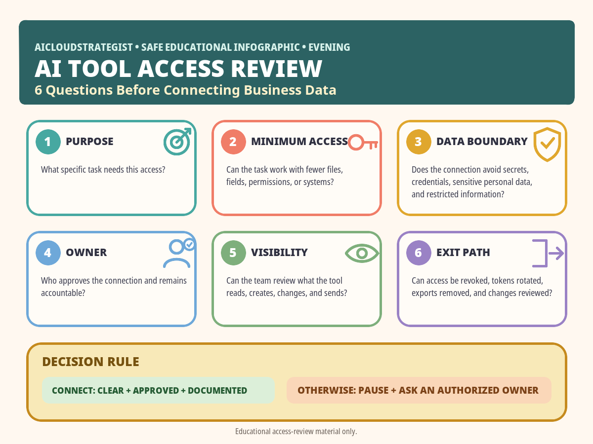

Purpose
What specific task needs this access?
AICloudStrategist safe educational publication · Evening · 2026-11-23
A practical educational review for small-business teams before granting an AI tool access to files, inboxes, calendars, customer records, or internal systems.

What specific task needs this access?
Can the task work with fewer files, fields, permissions, or systems?
Does the connection avoid secrets, credentials, sensitive personal data, and restricted information?
Who approves the connection and remains accountable?
Can the team review what the tool reads, creates, changes, and sends?
Can access be revoked, tokens rotated, exports removed, and changes reviewed?
Connect only when all six answers are clear, approved, and documented. Otherwise pause and ask an authorized owner.
Download the six-question CSV worksheet.
Educational access-review material only — not legal, compliance, privacy, security, procurement, or production authorization advice. No client results, certifications, rankings, savings, or guarantees are claimed.